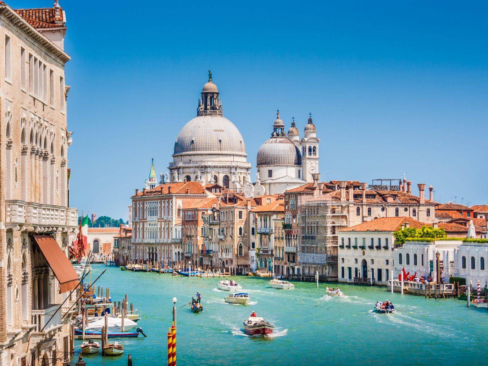
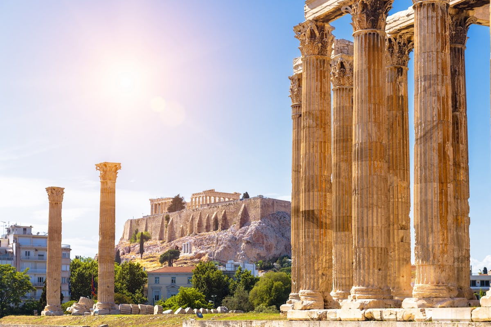
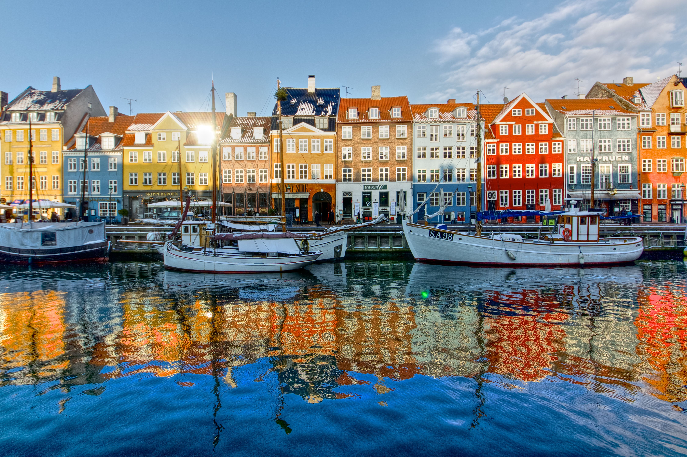
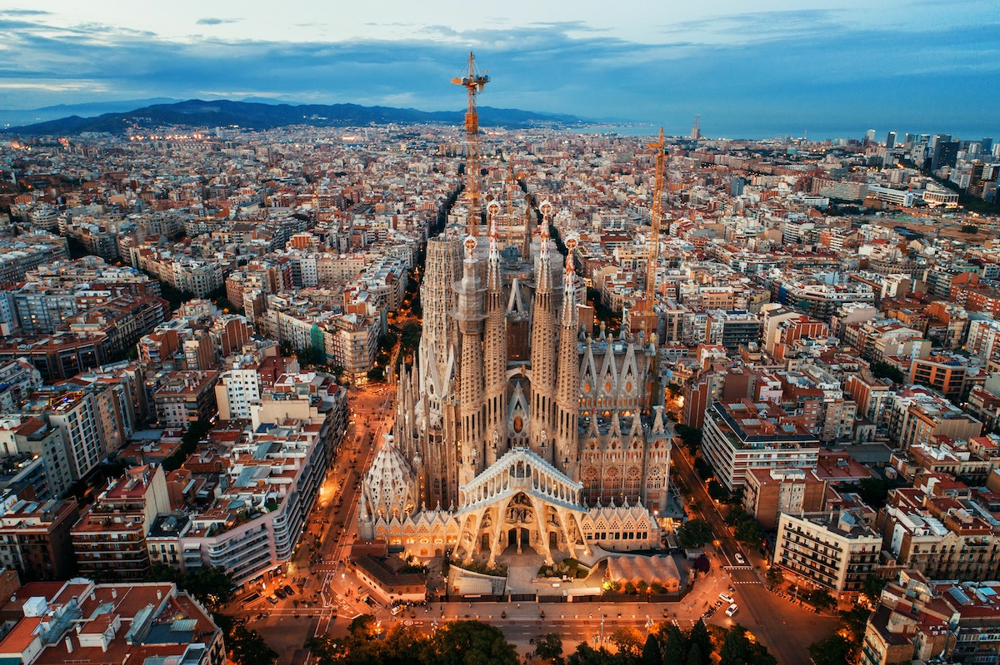
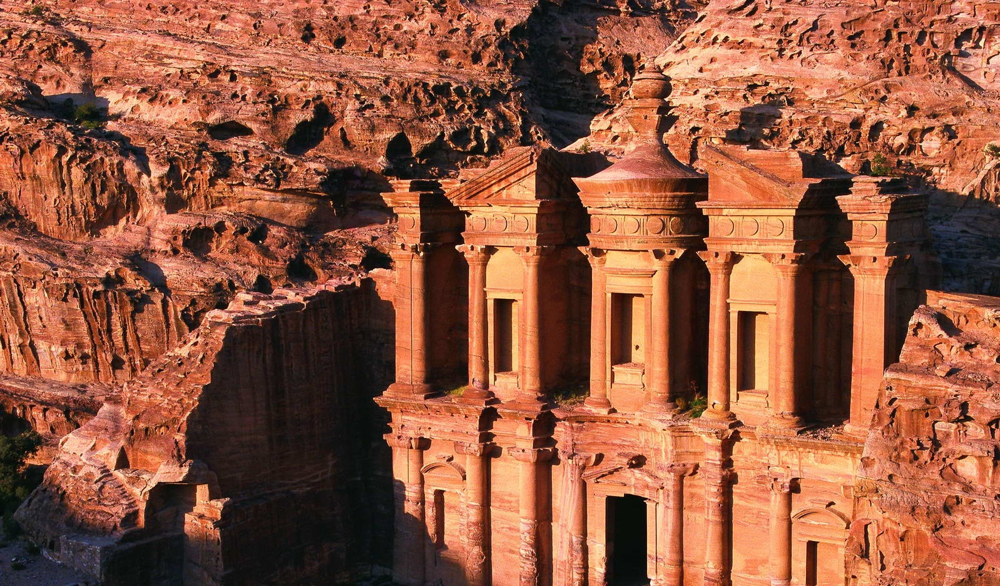

- Italy is the fifth most visited country in the world
- Interestingly much of Italy used to be part of Ancient Greece
- The Romans were nearly wiped out
- Italy is home to Europe’s oldest University
- Football fans are ‘like a disease’
- Cats have got rights
- The Italian Police Force use Lamborghinis
- The average Italian consumes 25kg of pasta per year
- There are 12 minority languages recognised in Italy
- Italy is the only country with over 50 UNESCO World Heritage sites.

Italy...

Greece...
- Greece is one of the sunniest places in the world
- The Greek Isles are home to over 6000 beautiful islands
- Greece is home to 18 UNESCO World Heritage Sites
- 80% of Greece is made up of mountains
- Greece has an impressive coastline… about 16,000 kilometers
- Santorini has different color beaches
- The Patron of Athens is a Goddess
- Greece is the third largest producer of olives
- Greece is home to more archaeological museums than any other country in the world
- Greece has a diverse array of wildlife

Japan...
- The oldest company in the world is in Japan
- Japan has the 11th largest population in the world
- In Japan there is 1 vending machine for every 24 people
- Nearly half the zippers worldwide are made in Japan
- Japanese melons can cost you over $200
- Japan imports over 80% of Jamaica's annual coffee production
- Japan once had the world’s largest fish market
- Japanese cuisine has a meat dish made of horse
- The first geisha in Japan were men
- Over 80% of land in Japan is mountainous

Copenhagen, Denmark
- Copenhagen was a fishing village
- Copenhagen has 15 Michelin-star restaurants
- Two of the oldest amusement parks in the world are in Copenhagen
- Copenhagen has been voted the best city for urban swimming
- Around half of Copenhageners Cycle
- Kronborg Castle was the setting for Hamlet
- Swimming in the ice-cold sea is popular
- Copenhagen is home to the world's largest collection of unopened beer bottles
- The harbour is so clean that local mussels live there
- Copenhagen was also the capital of Norway and Sweden

Spain...
- Spain Is The Only European Country To Have A Physical Border With An African Country
- Spain Was The World's First Global Empire
- Spain Boasts The World's Third-Largest Number Of UNESCO World Heritage Sites
- The First 'Novel' Is Attributed To A Spanish Author
- Madrid Has The Oldest Restaurant In The World
- Spain Was Under Muslim Control For Five Centuries
- The Spanish National Anthem Has No Words
- Around 44% Of The World's Olive Oil Is Produced By Spain
- Spain Has Over 8,000 Kilometers Of Coastline
- The Sagrada Familia In Barcelona Is Still Not Finished

Jordan...
- There are over 100,000 archaeological and tourist sites in Jordan
- Jordan is part of the Holy Land
- Jordan has the world's oldest dam
- The oldest statues in the world were found in Jordan
- The Dead Sea is the lowest point on Earth
- Jordan's national dish is Mansaf
- Petra was once a forgotten site
- You can walk across Jordan in 40 days
- You can refuse a meal three times before you accept
- Currency: 1 Jordan Dinar – $1.41 USD, keep in mind that Amman is a moderately priced city.